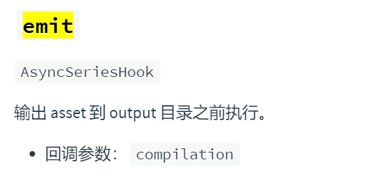

webpackplugin实现build模块上传
最近在玩screeps，screeps客户端自带一个ide，但用着不是很舒服，也不支持typescript，但官方提供了代码上传api可以把自己编译过后的模块上传，所以我想，能不能用webpack构建一个screeps项目，在build之后，调用screeps的api把代码上传上服务器。
暴露 library
output.librarytarget：https://webpack.docschina.org/configuration/output/#outputlibrarytarget
webpack默认entry是不暴露任何东西给外界的，但screeps代码main.js必须暴露一个loop函数module.exports={loop:()=>{}}
配置webpack的output.libraryTarget属性，来选择用什么方式暴露你的library，我要用module.exports暴露模块，所以我选择commonjs2方式
实现模块上传
查看webpack文档，在Plugins中有我需要的钩子

https://webpack.docschina.org/api/compiler-hooks/#emit /code api是上传字符串的代码，emit的的时机正好是获取到asset还未写入output目录，在emit时从compilation对象中拿到assets值，提交到api接口就能实现上传options
const path = require('path')
const { CleanWebpackPlugin } = require('clean-webpack-plugin');
const ScreepUploadPlugin = require('./ScreepUploadPlugin')
module.exports = {
entry: '/src/main.ts',
module: {
rules: [
{
test: /\.tsx?$/,
use: 'ts-loader',
exclude: /node_modules/,
},
],
},
resolve: {
extensions: ['.tsx', '.ts', '.js'],
},
plugins: [
new CleanWebpackPlugin(),
new ScreepUploadPlugin()
],
output: {
filename: 'main.js',
libraryTarget: 'commonjs2',
path: path.resolve(__dirname, '../dist'),
},
}
Plugin
const https = require('https');
const { email, password, branch } = require('../config/screeps')
function upload(data) {
const options = {
hostname: 'screeps.com',
port: 443,
path: '/api/user/code',
method: 'POST',
auth: email + ':' + password,
headers: {
'Content-Type': 'application/json; charset=utf-8'
}
}
return new Promise((resolve, reject) => {
const req = https.request(options, (res) => {
resolve(res)
});
req.on('error', e => {
reject(e)
})
req.write(JSON.stringify(data));
req.end();
})
}
class ScreepsUploadPlugin {
apply(compiler) {
compiler.hooks.emit.tapAsync(
'ScreepsUploadPlugin',
(compilation, callback) => {
// Do something async...
const data = {
branch,
modules: {}
};
const REG = new RegExp('([^\..]+)\..+')
for (let module in compilation.assets) {
const name = module.replace(REG, '$1')
data.modules[name] = compilation.assets[module]._value
}
upload(data).then(res => {
res.on('data', (d) => {
console.log('ScreepsUploadPlugin success', d.toString())
});
callback();
}).catch(err => {
console.log('ScreepsUploadPlugin error', 'upload fail!', err)
callback();
})
}
);
}
}
module.exports = ScreepsUploadPlugin